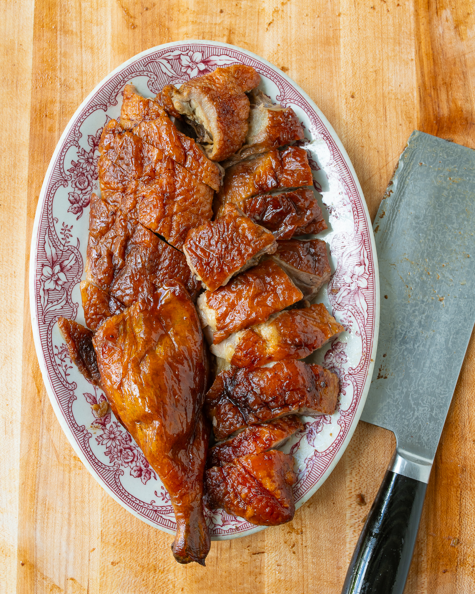

Chinese Roast Duck

Description
Finally, a recipe for those incredible Chinese roast ducks hanging in Chinatown windows!
It's the best roast duck we've ever had—well worth the effort!
Ingredients
- 1 Long Island (Pekin) duckling (about 5-6 pounds/2.5kg)
- ½ cup hot water for the roasting pan
For Seasoning the Duck Cavity
- 1½ tablespoons fine sea salt
- 2½ teaspoons five-spice powder
- 2 teaspoons sugar
- 1 teaspoon sand ginger powder (or galangal powder)
- 2 tablespoons Shaoxing wine
For the Cooked Marinade
- 2 tablespoons chee hou sauce
- 2 tablespoons warm water
- 1 tablespoon ground bean sauce
- 1 tablespoon hoisin sauce
- 1 tablespoon oyster sauce
- 1 tablespoon red fermented bean curd (a mix of solids and liquid)
- 2 teaspoons neutral oil (such as vegetable, canola, peanut, or avocado oil)
- 2 slices fresh ginger (⅛-inch/3mm thick)
- 2 medium garlic cloves (sliced)
- 1 scallion (white and green parts cut into 2-inch/5cm pieces and smashed)
- 2 dried bay leaves
- 2 star anise (segments broken apart)
- 1 Chinese cassia cinnamon stick (about 3 inches/7-8cm long, broken into small pieces)
- 1 piece dried mandarin orange peel (a 2-inch/5cm piece, broken into a few small pieces)
For the Water and Vinegar Bath
- 6 cups water
- 3 tablespoons Chinese red vinegar (preferably Koon Chun brand)
- 2 tablespoons maltose (or corn syrup)
- 1½ teaspoons fine sea salt
Steps
Trim and Clean Duck
- Trim any excess fat from the cavity of the duck, leaving the skin intact. Remove the wing tips using a sharp cleaver or kitchen shears. If you have a whole duck, remove the feet at the joints between the feet and legs.
- Traditionally, Chinese roast ducks come with the head on, but you can remove the head if you prefer. Leave the entire neck—it’s good for roasting and leaving it on makes the inflation process easier in later steps.
- Use tweezers to remove any pinfeathers and remove any of the remaining internal organs (there may still be parts of the lung in the upper cavity or the kidneys next to the cavity opening). Then rinse the outside and cavity of the duck, and pat both the outside and cavity dry with a paper towel. (Disinfect your sink and work surfaces after this process.)
Season the Duck Cavity
- Combine the salt, five- spice powder, sugar, and sand ginger powder. Rub the cavity of the duck with the Shaoxing wine, followed by the dry spice mixture, until thoroughly coated. Refrigerate for 1 hour, uncovered.
Making the Cooked Marinade
- In a medium bowl, combine the chee hou sauce, warm water, ground bean sauce, hoisin sauce, oyster sauce, and red fermented bean curd. Heat the oil in a saucepan over medium-low heat.
- Add the ginger and cook for 20 to 30 seconds, until fragrant. Stir in the garlic, scallion (both white and green parts), bay leaves, star anise, cinnamon stick, and orange peel. Cook for another 20 to 30 seconds. Add the sauce mixture you made earlier, and bring to a simmer over medium heat, stirring often. Once simmering, remove from the heat and let cool completely.
Marinate and Seal Cavity
- After the duck has sat in the fridge for 1 hour, pour the cooled marinade into the cavity. Use your hands to coat the entire cavity with the marinade, taking care to keep the outside of the duck clean.
- Use a metal skewer to carefully seal the cavity and make it completely airtight. At the base of the tail, insert the skewer crosswise through the flaps of skin on either side of the cavity, poking the skewer through so that only about 1 inch of the sharp end is sticking out the other side.
- Turn the skewer over the skin back the way it came from, and insert the skewer again, just above where you initially inserted it. Repeat, weaving the skewer across the skin around the cavity until you’ve sealed it completely. Push any remaining length of the skewer into the cavity.
- (You can also perform these steps with butcher’s twine and a trussing needle; just make sure you get a tight seal.)
Inflate Duck
- Now for the part that makes this a distinctively Chinese duck recipe! Insert a clean plastic tube attached to a small electric air pump between the folds of skin on the neck and close your hand around the tube and neck to create a seal. There should be a cut on the neck where the duck was slaughtered, where you can insert the tube. If your duck does not have the neck still attached, and the opening at the neck is very large, seal a portion of the opening using skewers or butcher’s twine before inserting the tube.
- Pump air in until you see the skin separating from the meat, all the way down to the drumsticks. As the air is pumped under the skin, it will look like an inflated balloon (albeit a lumpy one). Maintain a tight seal; it will deflate if the air is released.
- If the seal over the cavity (where you used the metal skewer earlier) opens, use your other hand (or ask someone to help!) to hold it closed so that the duck inflates. In stubborn areas where the skin is still sticking to the meat, use your fingers to pull the skin up off the meat (especially around the breast), and then reinflate. Thorough separation of the skin from the meat is key to even roasting. Flip the duck over and repeat this process.
- When the duck has been completely inflated on both sides, it’s time to tie it off. Grab someone to help you with this step to make it easier! With the pump still running, take a 6- to 8-inch/15-20cm length of kitchen string and tie a knot around the neck of the duck. Do your best to seal in as much air as possible.
Water and Vinegar Bath
- Bring 4 cups of the water to a boil. Turn off the heat. Place a rack crosswise over the top of a deep roasting pan or wok and place the duck on top of the rack. One ladle at a time, pour half the boiled water evenly over the duck. You’ll see the skin immediately shrink and tighten up as the hot water is applied. Carefully flip the duck over and repeat with the remaining boiling water. Set the duck aside on a sheet pan and discard the water.
- Next, make the vinegar bath, which will give the duck that signature dark color after roasting. In a medium saucepan over medium-high heat, heat the remaining 2 cups water, along with the red vinegar, maltose, and salt. Bring to a simmer, stirring to dissolve the salt, and remove from the heat.
- Place the duck back on the rack (over the roasting pan or wok) breast side down, and carefully ladle all the hot vinegar solution over the duck to coat it completely, just as you did with the boiling water. Make sure to cover all the exposed skin.
- Set the duck on the sheet pan once again and pour the used vinegar solution into a bowl. Then repeat this procedure with the duck back on the rack breast side up, pouring the reused hot vinegar liquid over this side of the duck. Any missed areas won’t have that signature Chinese roast duck color, so thoroughness is important!
Airdry and Marinate Overnight
- Leave the duck to air-dry for 30 minutes. Then place the duck breast side down on a clean, dry sheet pan or roasting pan, and refrigerate overnight, uncovered.
Roast
- 4 hours before serving, take the duck out of the fridge, flip it breast side up, and let it sit for 2 hours at room temperature. (A cold duck won’t roast evenly.)
- Position a rack in the center of the oven, then preheat the oven to 350°F/175°C. Line a large roasting pan with heavy- duty foil, with a roasting rack on top (a V-shaped rack is ideal). Place the duck on the rack breast side down and use a paper towel to wipe away any marinade that may have leaked onto the skin (it will burn in the oven or result in uneven coloring). Add the 1/2 cup hot water to the bottom of the pan to prevent any drippings from smoking as the duck roasts.
- Roast breast side down for 25 minutes. Rotate the pan 180 degrees and continue to roast for another 25 minutes. At this point, the skin should be a uniform reddish, dark brown. Remove the duck from the oven and use clean kitchen towels or heat resistant cooking gloves to flip the duck over so it is breast side up.
- Roast for 20 minutes, then rotate the pan 180 degrees and roast for another 20 minutes, or until the duck is a uniform dark brown color. Remove the duck from the oven, tent it with a piece of aluminum foil, and let it rest for 20 minutes.
Carve and Serve
- When ready to serve, remove the skewer sealing the cavity and carefully pour all the fat and juices into a fat separator. Then pour the juices through a fine-mesh strainer into a bowl to serve with the duck. (Reserve the rendered duck fat for other uses.)
- Using a sharp cleaver, cut the duck in half lengthwise from the top of the breast down through to one side of the backbone. Remove any aromatics in the cavity and discard. Next, take the half of the duck with the backbone still attached and make a lengthwise cut along the other side of the backbone to remove it. Cut off the wings and leg quarters. Chop the wings in half at the joint, chop each drumstick into two pieces, and chop the thighs crosswise into three pieces. Then, chop the remaining duck into bite-size pieces, using your cleaver to drive through the soft bones. Serve with the reserved sauce on the side.